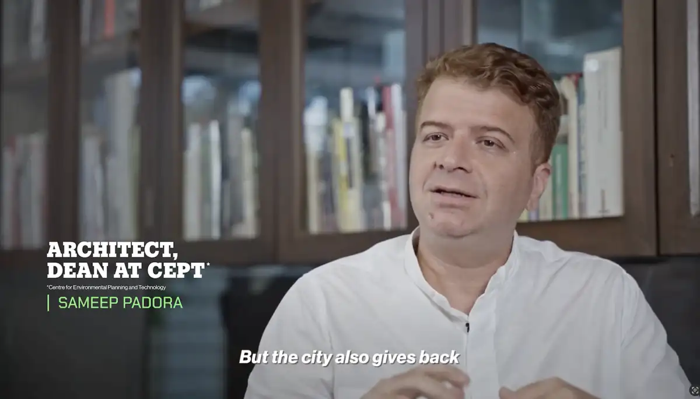

Mumbai is a different city by the hour. A street packed at noon is empty at midnight; a parking lot full on weekdays sits idle on Sunday. That time is open space too.

“Yes, it may look like Mumbai doesn’t have space to play. But the city also gives back. It is temporal in nature.”
Sameep Padora, in the film
Mumbai has far too few playgrounds. Football and cricket spill onto the streets, in among the traffic.
Turf Finder reads historic and live Google Maps traffic data to find when and where public spaces fall empty, then rolls out temporary turfs there, so play gets a safe place and a set time.
Sameep frames the city as temporal: open space counted not only in square metres but in hours. It is a way of finding room for play, rest and gathering in a city that has no land to spare.
Featuring Sameep Padora · Gatorade, PepsiCo India · Leo Burnett Mumbai · Offroad Films, directed by Akanksha Seda
Cannes Lions 2024: Gold, Creative Data · Bronze, Entertainment Lions for Sport